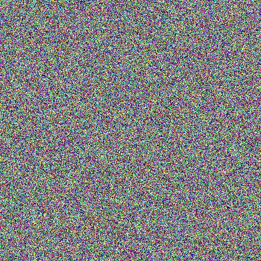
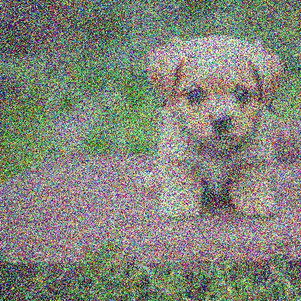
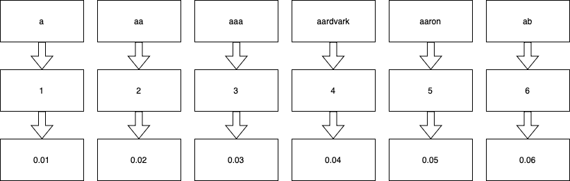

$(whoami)Agenda
Learning from data
Not learning from data
if (value <= threshold1) {
...
} else if (value <= threshold2) {
...
} else if (value <= threshold3) {
...
} ...
... if (value <= threshold1) {
...
} else if (value <= threshold2) {
...
} else if (value <= threshold3) {
...
} else if (value <= threshold4) {
...
} else if (value <= threshold5) {
...
} ...
... if (value <= threshold1) {
...
} else if (value <= threshold2) {
...
} else if (value <= threshold3) {
...
} else if (value <= threshold4) {
...
} else if (value <= threshold5) {
if (isKnown(value)) {
...
}
...
} else if (value <= threshold6) {
...
} else if (value <= threshold7) {
...
} else if (value <= threshold8) {
...
} else if (value <= threshold9) {
...
} ...
... Learning from data
 > > >  >
Compute graphs / model formats
Encodings or Embeddings or Word vectors

a tiny gpt
A bigger GPT
RAG or glorified prompt engineering :)
LoRa & QLoRa
Ollama
αcτµαlly pδrταblε εxεcµταblε
llamafile
Hardware acceleration
Azure Machine Learning
Data
next
https://github.com/samaleksov/integrating-llms
q & a